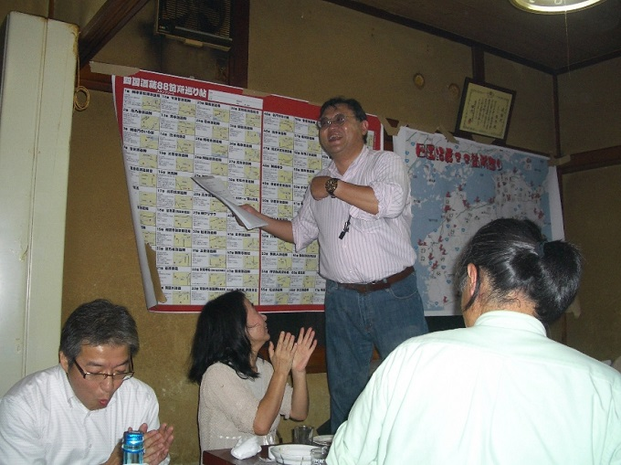
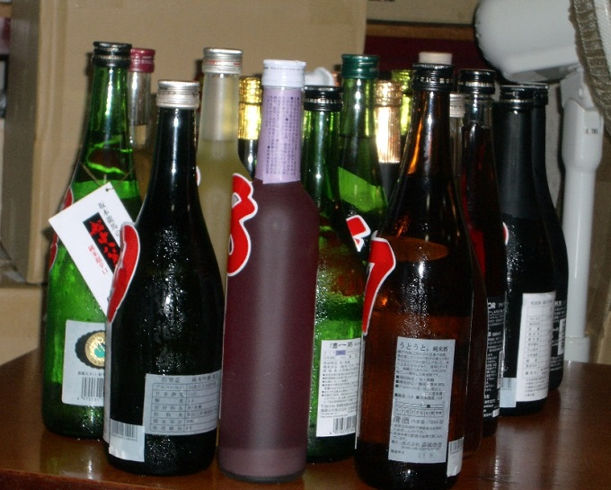
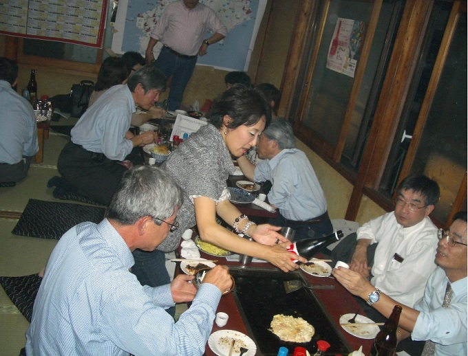
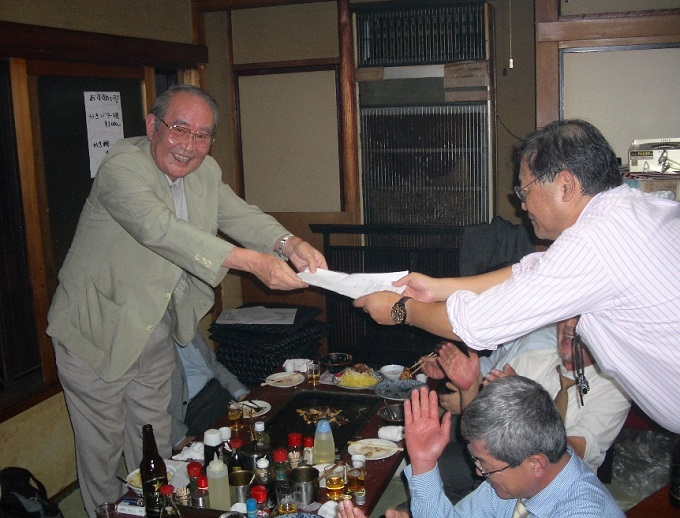
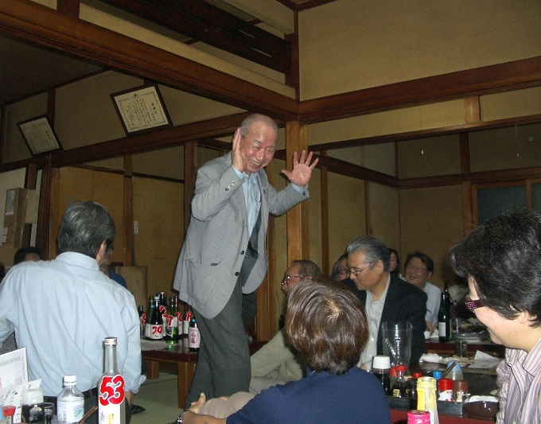
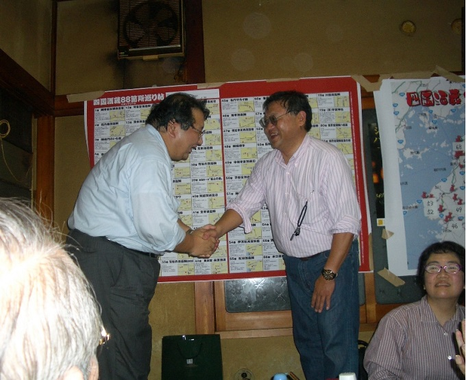

本来は８８か所巡りですが、１か所20cc飲んだとしても８８か所巡ると１升近く飲むことになるので、今回は３３か所に。
佐藤さん(54卒)が用意した３３本の酒を順に飲み、全員が33酒蔵の酒を味わい、「酒王（もどき）」に認定されました。

名古屋出張のついでに東京に駆け付けた佐藤さん

佐藤さんが持ち込んだ33酒蔵の酒

もんじゃを食べつつ、33か所酒蔵の酒を順に飲む。

全員に「酒王(もどき)」の認定書が贈られました。

筆相判断の森岡さん(27卒)

左は今回の幹事の土田さん(53卒)